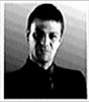
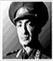
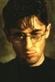
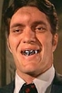
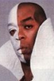
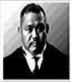

| |
|
James
Bond 007 |
Le
Heros du Film ! |
| |
|
Natalya
Simonova |
Natalya
est présents dans 6 Niveaux. Là ou elle vous aidera, c'est
dans la Jungle, avec son Cougar Magnum. En plus elle vise pas mal ! |
| |
|
Valentin
Zukovsky |
On
ne le voit que dans 2 Niveaux. Dans Statue, il vous indique ou attendre
006 et c'est tout. Dans Streets, il sert pour un Objectif. Un Personnage
surtout Rigolo car c'est le Seul de son Genre... |
| |
|
Dimitri
Mishkin |
Le
Ministre Russe de la Défense. Deux Niveaux, comme Valentin. C'est
peu, surtout qu'il ne fait vraiment pas grand-chose. |
 |
 |
Alec Trevelyan 006
|
Toujours vetu
de Noir, Alec Trevelyan, alias 006, alias Janus, est le Big Boss du Jeu.
Bien relou dans Cradle avec son AR33, ses Gardes du Corps sont égalemment
crispants. |
 |
 |
Xenia
Onatopp |
La Copine de
Trevelyan aime le RCP-90 et le Lance Grenades. Visez-là de loin
en biais dans la Tete et elle ne vous embettera plus. |
 |
 |
General Ourumov
|
Génial
dans le Film avec son Visage particulier, Oroumov ne vous donnera pas
de fil à retordre. En Battle, ce Personnage à la particularité
d'etre plus grand que les autres ! |
 |
 |
Boris
Grishenko |
Que dire
de Boris... C'est un Cretin, çà tout le monde sera d'accord.
Et 2 Niveaux c'est court... En Battle par contre, il fait un Tabac avec
son Short et sa Chemise Bariolée ! |
 |
|
Jaws / Requin
|
Assez dur à avoir dans Aztec, Requin est un bon Personnage,
que beaucoup utilisent en Battle du fait de sa Taille. Comme Oroumov,
il tire direct dans la Tete ! |
 |
 |
Baron
Samedi |
Un Bon
Personnage, bien original, avec son Chapeau et son Short Bizarre. Tres
Facile à avoir dans Egyptian, il n'en reste pas moins aussi populaire
que Requin, bien que moins connu. |
 |
 |
Mayday |
Bon Personnage
de Battle, sans plus... |
 |
 |
Oddjob |
Rien ! |